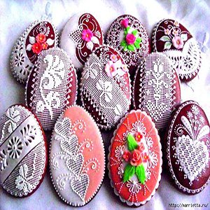

Хотите подарить своему ребёнку праздник? Тогда заказывайте детские печенья и
пряники в виде его самого любимого героя из мультфильма. Наши пряники понравятся вашему ребёнку и принесут
праздничную атмосферу в настроение окружающих.
Наша кондитерская специализируется на выпечке пряников для детей, в этом разделе
представлены такие пряники и печенье, как: пираты, свинка пеппа, миньоны, кейки, корона, кристины, боди,
ножки, смайлы, смешарики, совы, спайдермен, спанч боб, тачки, шары, енгри бёрдс и другие.
Чтобы заказать детские пряники – Вы можете позвонить нам по телефону, который
указан на сайте, написать письмо, или сделать заказ непосредственно на сайте. Если Вы не нашли в этом
разделе пряники, которые вас интересовали, Вы можете прислать нам фотографию, и мы обязательно изготовим
детские пряники такие как Вы хотите.
В нашей кондитерской Вы можете заказать прямо сейчас детские наборы “Пряники
Раскраски”. Мы предлагаем удивительные вкусные и красивые наборы для детей по привлекательным ценам.
Благодаря такому набору, вы сможете не только занять ребёнка креативным делом, а еще и полакомствовать
этим самым пряничным творчеством с чаем вместе с ним. А, может, вы тоже захотите присоединится к ребёнку
и посоздавать свои шедевры? Решать вам!
Хотите заказать пряники на свадебный торт? Не проблема! Одними из самых популярных
пряников в 2020 году у нас на сайте: Пряники мини тортики, Пряники невеста, Пряники сердца.
В нашей кондитерской вы можете заказать тематические пряники, мы находимся в
Харькове. На нашем сайте представлен каталог пряников, а если вы не нашли что искали, мы сделаем для
вас индивидуальный заказ и удовлетворим ваше желание.
Тематические пряники могут иметь разную форму: сердце, птички, письмо, купальник и т.д.

Кондитерская CupCake специализируется на выпечке печенья и пряников уже много лет,
за это время мы наработали множество клиентов, которые рекомендуют наши услуги своим знаком и друзьям, и
ежегодно заказывают нашу выпечку к разным праздникам.
Идеи для создания тематических пряников, могут быть самые разные, кому то
захотелось подарить своей второй половинке пряники в виде сердца, а кто-то решил заказать пряники в
виде платья. На самом деле вашу фантазию никто не ограничивает и можно сделать выпечку практически
любой формы.